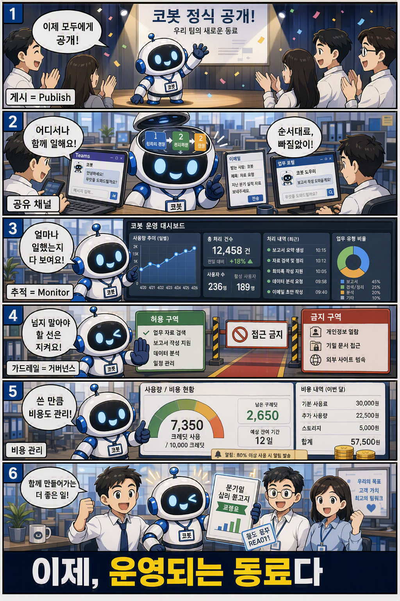

6부. 내보낸다 — 게시·공유하고 관찰한다

학습만화로 먼저 만나기 — 게시·공유하고 모니터·가드레일로 운영되는 동료가 된다.
코봇은 이제 검증을 통과했다. 5부에서 우리는 손으로 확인하고(Preview), 머릿속을 읽고(추론 관찰), 숫자로 증명했다(Evaluate). 이만하면 됐다 싶은 코봇이 손안에 있다. 그러나 아무리 잘 만든 코봇도 스튜디오 안에만 있으면 아무 일도 하지 못한다. 잘 키운 신입을 책상 하나 없이 교육장에만 두는 셈이다.
6부는 코봇을 세상에 내보내는 부다. 어디로 내보낼지 고르고(채널), 동료에게 안전하게 나누고(공유), 실제로 일하는 모습을 데이터로 관찰하고(Monitor), 사고 없이 굴러가도록 가드레일을 치며(거버넌스·비용), 끝으로 한 사람의 손을 떠나 조직이 함께 운영하는 자산으로 키운다(ALM). 이 부를 관통하는 한 문장은 분명하다. 배포는 끝이 아니라 시작이다. 내보낸 순간부터 코봇은 진짜 일을 시작하고, 그렇게 만든 것이 아니라 운영되는 동료가 되는 자리에서 이 책은 닫힌다.